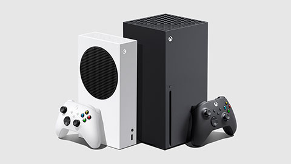

Intretenimento > Tecnologia
Saiba tudo sobre o novo console da Microsoft
Por Fábio Siqueira
Atualizado em 30/Outubro/2020
Quando lança?
O Xbox Series X e o Xbox Series S chegam oficialmente ao mercado brasileiro no dia 10 de novembro, confirmou a Microsoft nesta sexta-feira (23). A data é a mesma do lançamento global dos consoles. Apesar de ter seu lançamento global confirmado desde a primeira metade de setembro, os dispositivos de nova geração da Microsoft seguiam sem uma data confirmada de lançamento no Brasil até hoje. Em 29 de setembro, a pré-venda dos consoles foi iniciada oficialmente por aqui, uma semana após a pré-venda começar em mercados internacionais. Na ocasião, a Microsoft Brasil confirmou que o Xbox Series X e Xbox Series S seriam lançados em "novembro" no Brasil, porém sem uma data específica. A versão mais poderosa e capaz de rodar jogos em 4K, o Xbox Series X chega ao Brasil com preço sugerido de R$ 4.999. A versão mais básica do console, focado em experiências 1440p e sem leitor de disco, o Xbox Series S tem preço sugerido de R$ 2.999. Apesar do adiamento de Halo Infinite, que era tido como o grande jogo de lançamento dos novos Xbox, a dupla chega com 30 títulos otimizados – sendo 20 deles disponíveis através do sistema Smart Delivery. Segundo a Microsoft, os consoles também terão suporte para "milhares" de títulos de gerações passadas do Xbox através do programa de retrocompatibilidade no lançamento – vários deles com ganhos visuais e de performance.
| Processador | AMD clock fixo de 3,8 GHz 8 núcleos e 16 threads |
| Chip gráfico | GPU RDNA 2 clock fixo de 1,825 GHz |
| memória ram | 16GB |
| (10GB)jogos (6GB)SO e tarefas básicas | |
| armazenamento | SSD NVMe 1TB |